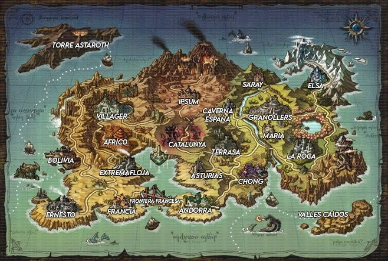

Las ciudades
TORRE ASTAROTH: Como ya ha sido explicada, es la torre donde el señor oscuro se resguarda cuando aparece. Está ubicada en una desolada isla en la que sólo se puede llegar en barco desde Bolivia. Ignorando la torre que está situada en el centro de la isla, alrededor sólo hay rocas y vegetación ya muerta. Cuando despierta el señor oscuro, la zona se vuelve de un tono verdoso y desprende unas cenizas.
VILLAGER: Junto a Granollers y Bolivia, una de las ciudades más importantes de todo el continente. Aquí es donde se forman a los milagros para que sean capaces de combatir contra el señor oscuro y puedan sobrevivir en la torre de Astaroth. También, es la ciudad donde se origina la gran organización de Fuerzas Especiales Inteligentes Villager (FEIV). Habitan personas normales pero la mayoría son milagros que están entrenando para entrar a la torre de Astaroth. Finalmente, hablando sobre la seguridad de la ciudad, es de las ciudades más seguras pues, está llena de personas con un pensamiento puro de salvar a los demás y por lo tanto, no toleran las injusticias. Razón de por qué se lleva tan bien con Andorra pues, piensan que es injusto lo que Francia les hizo y les ayuda económicamente.
IPSUM: La zona más calurosa de todo el continente. Hace exactamente 2023 años, cuando nació la generación de milagros que iban a derrotar al señor oscuro de ese tiempo, nació un bebé que manifestó su alma justo el mismo momento de nacer, generando un terremoto en el lugar y haciendo aparecer unos volcanes en la zona montañosa del norte. Después de eso, la energía vital del bebé se acabó y murió. Nadie sabe qué más pasó después de esto. Quizá está en algún libro de la torre. La ciudad como tal es una ciudad tranquila y normal. Aunque tienen un poco de miedo hacia los milagros.
AFRICO: Después de Granollers tenemos Africo, la segunda ciudad más rica de todo el continente. Aquí es donde van la mayoría de milagros que se retiran a descansar cuando el señor oscuro es derrotado. Por lo general está habitado por linajes de antiguos milagros famosos que han habido anteriormente.
CATALUNYA: Catalunya es una zona desértica donde hubo una confrontación entre dos milagros poderosos. Se dice que en ese lugar hay una gran fuerte conexión con el alma pues también se rumorea que allí fue donde apareció el primer señor oscuro.
CAVERNA ESPAÑA: Una caverna en posesión de Granollers, rica de minerales.
TERRASA: El único lugar en ruinas. Anteriormente Terrasa era una ciudad bella con una arquitectura parecida a la romana, toda hecha de piedra pero, hubo un conflicto por un caso de corrupción con el antiguo gobernante que utilizaba un sistema político monárquico. El conflicto generó una guerra civil, que acabó cuando un milagro destruyó todo el lugar, cansado de tanta matanza entre civiles.
ASTURIAS: Rodeados de montaña, se encuentra Asturias. Poca gente suele visitar este lugar pues, está bastante vacío pero dicen que aquellos que viven allí tienen un buen conocimiento sobre la medicina y las plantas.
CHONG: Se caracteriza por unos rasgos de ojos achinados. Los humanos de allá son bastante fieles a las artes marciales. Podría decirse que es el lugar donde se originó el arte marcial. Por otro lado, dispone de un servicio de navegación por mar como Bolivia. Utilizado para desplazarse a Valles Caídos.
VALLES CAÍDOS: Es una cárcel que se utiliza para contener a criminales que hayan cometido fechorías como el asesinato y la esclavitud. La organización que se ocupa de vigilar a estos criminales es Fuerzas Especiales Inteligentes Villager (FEIV). Los miembros son personas que se especializan en el combate en armas o en las artes marciales. Hay dos líderes hermanos en esta organización, la que se ocupa de las armas, la líder Serena Martinez, y el que se ocupa de las artes marciales, Carlos Martinez.
LA ROCA: De todas las ciudades esta es la más corriente. Aquí viven humanos que no tienen ni unos logros dignos de mencionar ni tampoco una pasión digna de valorar. Simplemente viven en esta ciudad con sus vidas tranquilas mientras transcurre el tiempo. Un lugar ideal para descansar.
MARIA: Ciudad vecina de Granollers. Maria comparte la mayor fuente de información que hay en el mundo. Todos los intelectuales viajan hacia allí para poder estudiar su gran fuente de conocimiento, la Biblioteca Lillium. La mayoría de libros fueron aportados por su vecino Granollers.
SARAY: Toda la chusma que Granollers no quiere es deportada hacia la ciudad Saray. Allí viven personas peligrosas o de mala reputación que no son dignas de vivir en la capital. Estos obviamente pueden escoger no vivir allí pero en realidad es un lugar bastante cómodo pues, aunque sea donde están los “no queridos” de Granollers, estos siguen recibiendo apoyo de la misma ciudad.
ELSA: Esta es la única ciudad donde reina el frío. Todo es debido a que un milagro, a punto de cumplir sus años de vida, decidió morir creando una explosión en su alma, congelando toda la ciudad. Ahora, después de 2924 años, la ciudad sigue congelada pero, encontraron una forma de utilizar todo este hielo y hacerlo un comercio. También viven personas que se resisten a las bajas temperaturas de Elsa.
BOLIVIA: La segunda ciudad más importante que hay en el continente. Bolivia es el lugar donde todo el mundo debe pasar si quiere ir a la torre Astaroth pues, es la única con la que cuentan un servicio de navegación además de Chong. Los residentes de la ciudad son personas calmadas y bastantes creyentes de una religión formada por el papa Klaus von Regis. La religión controla una gran parte política de la ciudad.
ERNESTO: Conectada con Extremafloja, Bolivia y Francia, Ernesto es una ciudad donde las personas con necesidades económicas van a vivir. Las calles están sucias, llenas de humo debido a la gran cantidad de fábricas situadas en la ciudad y también peligrosas por las noches pues no todo el mundo encuentra su solución económica en aquél lugar y recurren a la violencia. De ahí predominan 3 organizaciones. La Fábrica de las Armas Milagrosas, “FAM”, una organización que se dedica a la investigación de armas para que los milagros puedan imbuir su resonancia de alma. También se dedican a la venta de armas de fuego. Seguidamente tenemos la organización PRODIGIO. Esta organización promete que las personas son igual de importantes que los milagros y, que por lo tanto harán todo lo posible para que ellos tengan un modo de vida que merezcan. Suelen prometer trabajos, dinero y viceversa. Por último, tenemos la organización Milir. Se hacen ver como que se dedican a la venta de producciones que se hacen en la ciudad pero en realidad esta organización recluta a milagros y los venden como esclavos para los ricos. La manera en la que los “reclutan” es tomando el control de sus seres queridos.
EXTREMAFLOJA: Al igual que la ciudad Ernesto, Extremafloja es un lugar de ámbito pobre. Calles sucias, mugrientas y llenas de personas que preferiblemente querrías no encontrarte. Ahí viven personas que escaparon de la organización de Milir de Ernesto. También otras que piensan que Ernesto es demasiado peligroso para vivir y escogieron esta ciudad pues, también abunda el trabajo. Lo bueno de Extremafloja es que ahí no hay organizaciones y todo está controlado con un sistema político un poco dictatorial pero, esta ciudad te puede sacar de la pobreza si consigues durar lo suficiente.
FRANCIA: Es una ciudad con un conflicto bélico hacia Andorra. 3000 Años atrás un gobernante traicionó toda la ciudad de Francia abandonándolos cuando necesitaban recursos en la aparición del señor oscuro. Después de tal traición decidieron construir una frontera donde las personas empadronadas en Andorra no puedan jamás pasar por Francia y tengan que dar la vuelta por todo el continente para llegar hacia Bolivia. A pesar de estar cerca de Extremafloja y Ernesto, Francia no es para nada pobre. Es una ciudad como cualquier que vive del turismo por su historia contra Andorra.
ANDORRA: Viviendo con odio y racismo hacia los habitantes de Francia, tenemos a Andorra. Geográficamente está compuesta de casas rurales junto a bastantes organizaciones dedicadas a la acuicultura. La más importante de ellas es Pisces, liderada por un joven chico milagro, que heredó el puesto después del fallecimiento de su padre Markus au Fatui. La organización Pisces controla las diferentes zonas de pesca y se debe pagar una tasa para poder utilizarlas. Tienen una buena relación con Terrasa y Villager.
